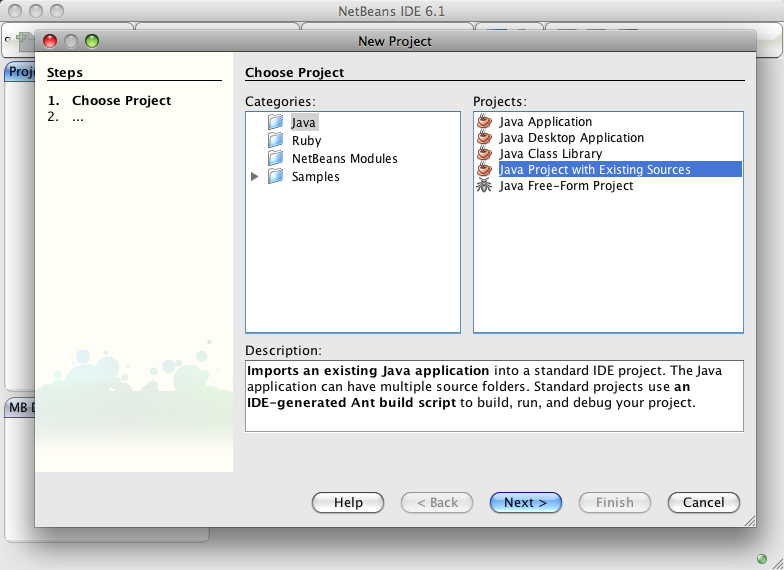
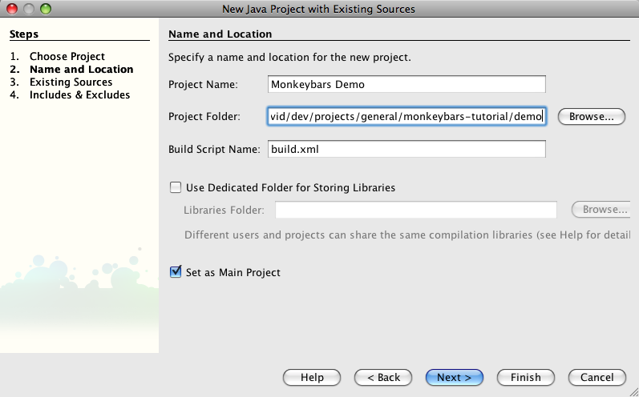
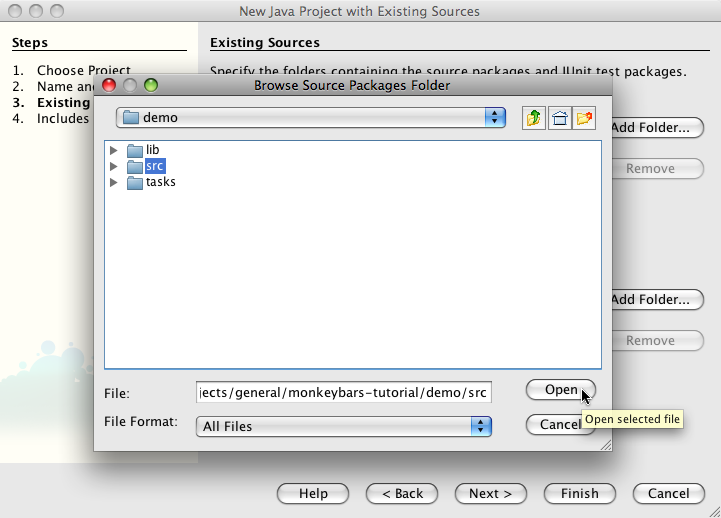
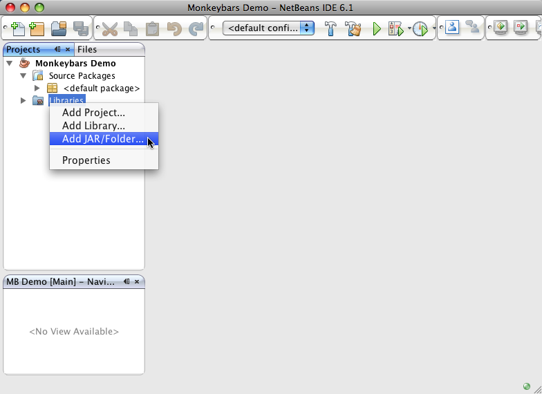

Getting Netbeans
Netbeans is a Java based IDE with good support for Ruby editing. It is available on many desktop environment including Windows, OSX, and Linux. Netbeans can be downloaded from netbeans.org.
Getting and installing Netbeans
Netbeans is provided in a variety of distributions. The three that are useful for JRuby Swing development are the Java SE, Ruby, and All distributions.
- If you download the All distribution you will have everything you need installed, but will also have a lot of unneeded packages as well.
- If you download the Ruby distribution you will need to use the package manager to add the Java editing packages.
- If you download the Java distribution you will need to use the package manager to add the Ruby editing packages. This is a little more straightforward than adding the Java packages and is the preferred package if you don't install "All"
Installing requisite plugins
If you download a version other than the "All" version you will need to install one or more plugins to make your editor work as a JRuby Swing development system. To access the plugin manager in Netbeans go to Tools -> Plugins.
Plugins to add to Ruby version
- Java
- GUI Builder
- Java Debugger (optional)
- Java Profiler (optional)
Plugins to add to Java version
- Ruby and Rails
- Ruby Extra Hints (optional)
Installing Rawr
Since we are using a Java project, Netbeans will expect a Java class as the program's start point. You can't tell Netbeans to run your project using a Ruby file for your main file so we need a Java file that kicks off your Ruby project. Fortunately the Rawr project provides just such as thing, (in addition to packaging and deployment solutions). Rawr is distributed as a gem, but it has limited functionality when installed under MRI Ruby so it is highly suggested that you install it as a gem under your local JRuby installation.
MRI : sudo gem install rawr
JRuby: jruby -s gem install rawr
To install Rawr into your project, run the following command from the base of your project.
MRI : rawr install
JRuby: jruby -s rawr install
This will add the Main.java file we need along with a configuration file, build_configuration.rb and a copy of the jruby-complete.jar file which is typically needed for distribution and is used for many Rawr tasks such as Ruby file compilation. Rawr uses build_configuration.rb for the settings needed to build your jar/exe/.app/gzip. When we run the project from Netbeans the Rawr Main class should be the only class that is shown on the list. Simply select the class, click ok, and your application will start running src/main.rb.
Setting up a Netbeans project
The project is created as a Java project, even though we won't be writing any Java directly. This is because Netbeans will not give you access to create new Java forms using the GUI builder unless the project is a Java project (although you can still edit them as a Ruby project). Until this problem is corrected we must create Java projects so that we have access to the GUI editing tools. For this reason Rawr is often used to create a Java main file that Netbeans can launch, thereby allowing you to run your app from your "Java" project.
To create a new Netbeans project for your Monkeybars files click on File -> New Project. Select the Java category and then "Java Project with Existing Sources".

Click next and then name your project and make sure the project folder is pointing to your Monkeybars project folder.

Click next, then click on the "Add Folder" button next to the "Source Package Folders" box. This will open a file browser at your project's root. Select the src directory and click "Open".

Finally click "Finish" and you will see your project show up in the project list.
Adding libraries
Once your project has been created you'll want to add any jar files you are using to the libraries section of your project. You can do this by right clicking on the libraries and choosing "Add Jar/Folder". The first thing you'll want to add is the Monkeybars jar file located in your projects's lib directory as well as the JRuby jar file. Now is a good time to add any other jar files your project will need to your lib/java directory and also add them to your library in Netbeans.

The swing layout jar needed by the Matisse layout system is usually needed and you can find its location on your system by clicking Tools -> Libraries and selecting "Swing Layout Extensions". The "Library Classpath" box will show the location to the jar file. Copy that file into your project's lib/java directory for distribution.
Continue to the next section: Using the generator.